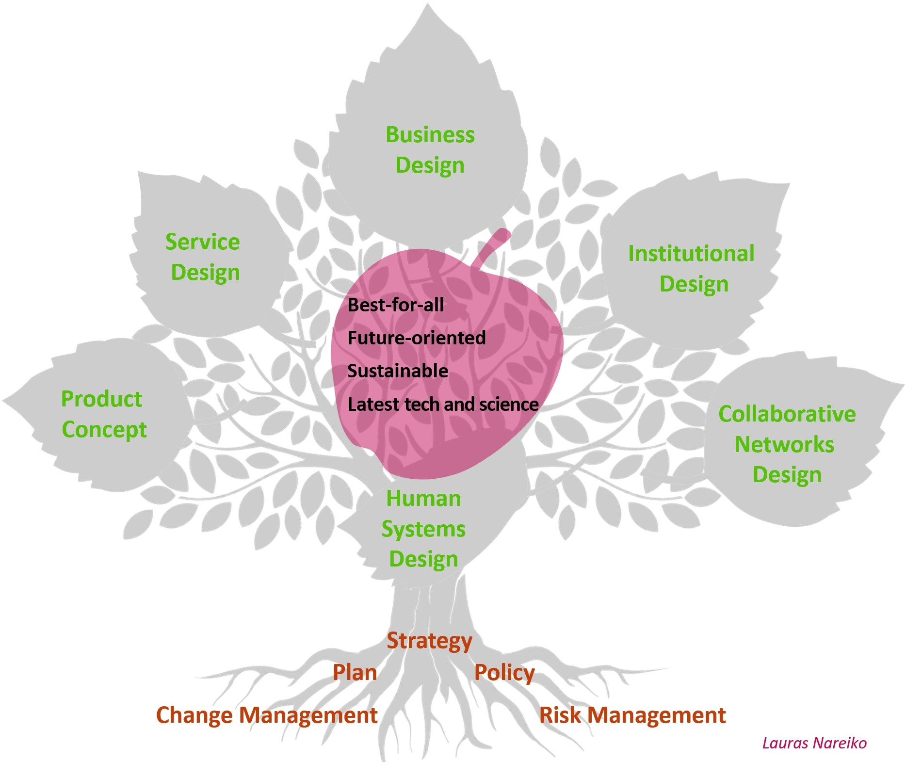

Human systems design
Human systems can be defined as broadly as one likes. In plain language, they somehow include humans. They can be small like one product and its user or large like global communities.
What distinguishes them, e.g., from inanimate systems, is the free will of their participants. Human systems are less predictable because, I believe, every person has a free will and can change their course of action in any moment.
Hence, many, if not all human systems need to be conceived as dynamic, adaptable and self-regulating. They are never closed, but always changing. The purposes they are serving, what is good or bad for them, are also changing all the time.
I solve new, hybrid, difficult to classify problems
Many professionals specialize in solving certain types of problems. I "specialize" in new problems - and they are often on the border between domains.
My customers usually say they just need a creative spark or some fresh knowledge to solve their problems. Yet often slightly more than that, and this is why it is difficult to find these 'sparks' or 'fresh knowledge' around, especially from one source.
For example, to consider a complex question, one needs
- Abstract thinking,
- Logical thinking,
- Strategic and scenarios thinking,
- Systems thinking (a capacity to explore links between phenomena),
- Futures thinking (a capacity to explore things holistically and dynamically),
- Knowledge about probable emerging changes,
- At least, high-level knowledge of the corresponding domain,
- Knowledge about human motivation (needs, desires, and their dynamics),
- And, of course, some creativity - a skill that also needs to be learnt and trained.
Depending on what you know about your problem, I can begin from any point of uncertainty.
Some people know they have a problem, some (think they) know what sort of solution will solve it, some can outline a part of the solution. My deliverables are usually: 1) a concept of one or several solutions, together with ethical explanations, 2) realization path(s), 3) risks and opportunities maps. Sometimes I can also help with execution.
I am answering questions like: how can we make something profitable, how can we change something in view of the new circumstances, how do we get rid of some troubles, etc. The tree picture above contains some scientific names for what I do: business design, for example.
Where necessary, I collaborate with other professionals, scientists and firms from Finland and other countries. Participatory methods such as crowdsourcing of ideas, futures workshops, Delphi studies etc. can be organized globally with digital means or locally in cooperation with the customer.
Previous customers, experience
The tree above represents what I did in the past, you can also check examples of my thinking in my blog. Business design, service design, and collaborative networks design were the most frequent categories.
By June 2023, I have helped over seventy relevant customers. Their size varied a lot (some were global leaders), as well as their industries. The nature of the problems has been changing in line with the dominant trends: e.g. globalization, digitization, sustainability, self-sufficiency, artificial intelligence...
'Comprehensive', 'holistic', 'creative', 'futuristic' - these words my customers use when they give feedback about my ideas.
In 2018, the Global Challenges Foundation announced a contest with USD 5M in awards, of which the absolute winner would have received at least USD 1 M. The task was to suggest a global governance system that would meet a number of criteria, e.g. equality of people, being realistic for the coming decade etc.
A tough challenge and good money, also for scientific, expert organizations and consultancies. I decided to participate. Over 12.000 others also decided so and registered for the contest. Yet only about 2.700 of them submitted their entries. (Here is mine, just in case.)
I did not win, but I was in that top quarter who delivered.
Why Lauras Nareiko
- As a professional futurist, able to work with the highest complexity.
Master's degree, then ongoing doctoral research in Futures Studies in Finland - a country that is a global leader in the field. Futures Studies background helps think holistically, anticipate and influence futures.
- Experienced in reaching clarity and formulating high-level questions to answer, which is sometimes half of the solution.
Check, for instance, how I explored a highly uncertain topic in my Master's thesis, briefly presented here: New human needs in safe sci-fi futures. - Courageous. Daring to consider even crazy ideas. Practiced at working with impossible problems.
Can people in totalitarian countries get free? I am working on it. - Several times more creative than comparably educated professionals, according to a few quantitative and qualitative metrics.
Because I have studied creativity and trained it. Check my blog and judge yourself. Or, just for fun, here is my idea for the Bielefeld challenge that required participants to prove that the city did not exist.
Keywords:
- Business Design
- Change Management
- Foresight
- Institutional Design
- Organisation Design
- Plan
- Policy Design
- Product Concept
- Risk Management
- Service Design
- Social Systems Design
- Strategy